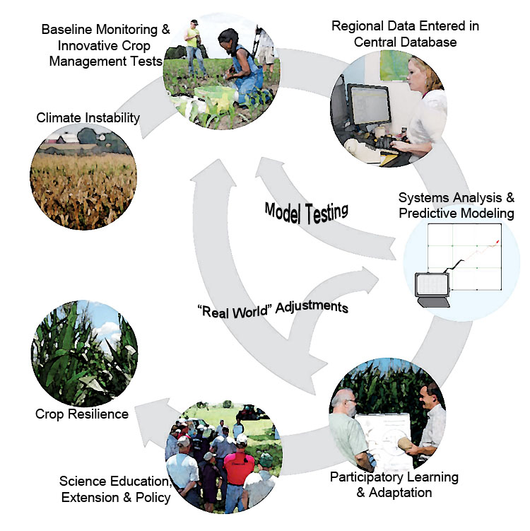

Find us on Twitter
Find us on Twitter


 Winner, Soil & Conservation AwardJuly 28, 2015 Today Rattan Lal, Ohio State University professor and Principal Investigator with the Sustainable Corn Project, was awarded the Soil and Water Conservation Society’s “2015 Editor’s Choice” award for his paper entitled “Societal Value of Soil Carbon.” The paper was published in November 2014, in a special “Climate Change and Agriculture” issue of the Journal of Soil and Water Conservation. See http://www.jswconline.org/content/69/6.toc. Pictured from left to right: Mark Berkland, 2015 SWCS Board of Director’s President; Rattan Lal; Jim Gulliford, SWCS Executive Director. --------------------------------------------------------------------------- Farmer Survey BriefsJune 23, 2015 Seven short reports are now available that summarize key results from our project's survey of Corn Belt farmers. Read and download the reports HERE. The full study report, commonly referred to as the "Stat Atlas"--a reference to its many regional maps--can be read and downloaded at the same link. --------------------------------------------------------------------------- Water Workgroup to Expand Water Storage StudiesApril 26, 2015
AMES, Iowa — Iowa State University is partnering with researchers at seven other land-grant universities to examine the economic and environmental benefits and costs of storing water from farm drainage systems for crops to use later and to reduce nitrate-nitrogen loss into waterways. The project, led by Purdue University, began this month and is funded by a $5 million grant from USDA’s National Institute for Food and Agriculture (NIFA). Matthew Helmers, ISU professor of agricultural and biosystems engineering, and many other researchers on the new water storage project are wrapping up work on a five-year, $20 million, multi-university, USDA-NIFA Coordinated Agricultural Project (CAP), commonly known as the Sustainable Corn Project. That project, led by Iowa State, has been studying ways to make Corn Belt agriculture more resilient to extreme weather events and other effects of climate change. - more - |
||
Project Scientist Named to National Academy of SciencesA principal investigator with our project and a Distinguished Professor at Iowa State University was elected to the National Academy of Sciences for her achievements in original research, the academy announced on April 30. Read the Iowa State news release here. |
||
Woodchip BioreactorsCheck out our new video: Woodchip Bioreactors: Removing Nitrates From Field Tile Lines. It's an introduction to woodchip bioreactors, which can reduce nitrates in subsurface drainage tile water. |
||
|
||
Nitrate loss explained in NEW videoMarch 2015...In a video just released by Iowa State University, researchers talk about how nitrogen is lost from cropping systems to waterways and discusses strategies that can reduce those losses to meet state goals. The Nitrogen Cycle video --------------------------------------------------------------------------- |
||
Journal of Soil and Water Conservation"Climate Change and Agriculture" online at http://www.jswconline.org/content/69/6.toc. Featuring several commentary pieces and peer-reviewed articles by Sustainable Corn team members. --------------------------------------------------------------------------- |

 Cover Crops and Climate Change: The Value of Modeling
Cover Crops and Climate Change: The Value of ModelingMore about the Sustainable Corn Project...

Project Partners
- Iowa State University
- Lincoln University
- Michigan State University
- The Ohio State University
- Purdue University
- South Dakota State University
- University of Illinois
- University of Minnesota
- University of Missouri
- University of Wisconsin
- USDA Agricultural Research Service, Columbus, Ohio
- USDA National Institute of Food and Agriculture (USDA-NIFA)